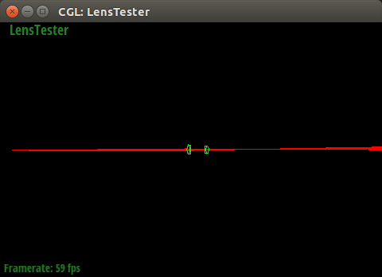

This project extends the pin-hole pathtracer by adding a lens between the sensor plane and the world. Part 1 implements ray tracing through the lenses, which gives some realistic camera effects such as depth of field. Part 2 implements autofocusing by evaluating how in focus a selected patch of image is on diffent sensor depths.
Part 1: Ray Generation and Intersection
In this part, I first implemented tracing through lenses using the vector form of Shell's law:a^2 + b^2 = c^2
Difference between pinhole camera and a lens system.
Depth of field In pinhole camera, every point is in foucs. In lens model, things may go out of focus and become blur. This depth of field changes according aperture size, focal length and the distance of object in the lens model.
Perspective effect: In pinhole camera, there's no persepctive effect. In lens model, when wide-anlge and fisheye lens are used, there're distortions at peripheral caused by perspective effect.
Visual field: In pinhole camera, the visual field only depends on the sensor size and sensor depth. In lens camera, the visual field may be wider of narrower depending on which type of lens you are using. (Wide-angle's visual field is wider and telephoto narrower)
Conjugate points on 4 lenses
|
| |

| |

|

|
|
|
The parameters of the four lenses
I used raytracing to calculate the focal length, infinity focus sensor depth, close focus distance in front of the lens and close focus sensor depth.
a^2 + b^2 = c^2
| Lens | focal length(mm) | infinity depth(mm) | close object distance(mm) | close sensor depth(mm) | lens info |
| #1 | 50.3581 | 51.2609 | 264.605 | 62.7566 | D-GAUSS F/2 22deg HFOV |
| #2 | 22.0234 | 28.7634 | 109.048 | 34.5796 | Wide-angle (38-degree) lens. Nakamura. |
| #3 | 249.566 | 188.758 | 1646.2 | 236.875 | SIGLER Super achromate telephoto, EFL=254mm, F/5 |
| #4 | 9.99116 | 28.7436 | 60.8501 | 31.1804 | Muller 16mm/f4 155.9FOV fisheye lens |
The inverse relationship between sensor depth and its world-side conjugate

|
|

|

|

|
|
|
|
|
Result
|
|
Here is an example of how to include a simple formula:
a^2 + b^2 = c^2
or, alternatively, you can include an SVG image of a LaTex formula.
This time it's your job to copy-paste in the rest of the sections :)
Part 2: Contrast-based autofocus
In this part, I first implemented tracing through lenses using the vector form of Shell's law:A Few Notes On Webpages
Here are a few problems students have encountered in the past. You will probably encounter these problems at some point, so don't wait until right before the deadline to check that everything is working. Test your website on the instructional machines early!
- Your main report page should be called index.html.
- Be sure to include and turn in all of the other files (such as images) that are linked in your report!
- Use only relative paths to files, such as
"./images/image.jpg"
Do NOT use absolute paths, such as"/Users/student/Desktop/image.jpg"
- Pay close attention to your filename extensions. Remember that on UNIX systems (such as the instructional machines), capitalization matters.
.png != .jpeg != .jpg != .JPG
- Be sure to adjust the permissions on your files so that they are world readable. For more information on this please see this tutorial: http://www.grymoire.com/Unix/Permissions.html
- And again, test your website on the instructional machines early!